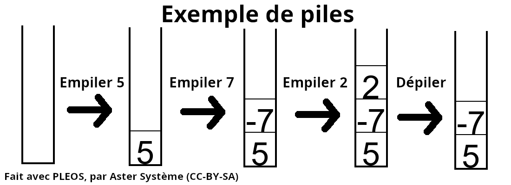
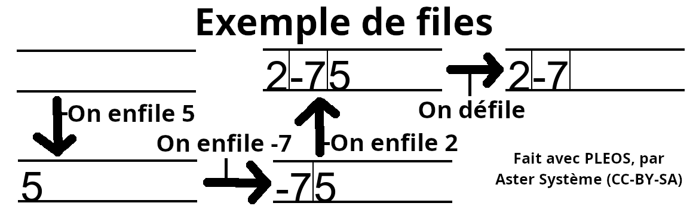
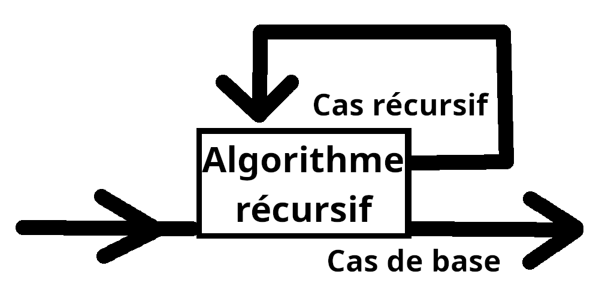

Le programme de NSI
Si vous nous suivez et que vous êtes soit en classe de première, soit en classe de terminal, il y a de grandes chances que vous ayez choisi la spécialité NSI. En effet, c'est la spécialité rêvée pour tout fans d'informatique. Sur cette page, nous n'allons pas expliquer chaque concepts un par un précisément comme en cours, mais plutôt décortiquer le programme et expliquer comment et pourquoi il est fait. Bien évidemment, nous allons utiliser le programme fourni par l'éducation nationale pour l'année 2024-2025.
Bien évidemment, tout cela ne reflète que notre analyse personelle. Si vous avez des professeurs différents, certaines notions peuvent être vues de manière différente. Cependant, une grande partie des professeurs font de la même manière : commencer par le début et finir par la fin. Donc, les divergences ne devraient pas être si élevées que ça.
Quelques détails
Comment lire cette page ?
Cette page n'est pas un ensemble de leçon pour les élèves, comme il ne s'agit pas d'un guide pour réaliser ses cours en tant que professeur. Cette page n'est pas non plus là pour directement critiquer le programme. Au contraire, cette page est sensée servir de présentation du programme à tous individus extérieurs / prochainement intérieurs au lycée, agrémenter de quelques précisions et commentaires. Par exemple, si vous avez pour projet de choisir cette enseignement de spécialité pour la terminal (ou pour la première), voici sur quoi vous allez travailler. Mais aussi, si vous voulez devenir professeur de NSI, voici les sujets sur lesquelles vous allez devoir travailler avec vos élèves. Si vous avez déjà cette spécialité, et que vous voulez donner un avis, n'hésitez pas à nous contacter à astersystemelearnoff@gmail.com. Si vous cherchez des sujets de BAC, vous pouvez en trouver sur ce site web. L'avantage de cette matière est que beaucoup d'infos sont facilement obstensibles sur Internet, rendant une grande partie des nouveaux inscrits particulièrement doué. C'est pour cela que, si vous êtes doués, n'hésitez pas à aider vos camarades. Si vous êtes un professeur, avec plusieurs élèves doués, n'hésitez pas à les missionner pour aider les autres, il n'y aura que des avantages !
Cette enseignement de spécialité est assez jeune. Cela a un gros avantage : elle n'a pas les problèmes des matières plus vieilles (limites externes, dogmes pédagogiques...). Cependant, cela a un gros inconvénient : l'absence de normes claires. Il n'est pas rare de voir des erreurs (grossières, disons le) dans certains sujets de BAC. Elle a souvent été sous-estimée par les rédacteurs du sujets, en faisant une matière extrêmement facile pendant un bon moment. Elle est aussi sous-estimée par l'enseignement supérieur (certaines universités refont passer des cours d'informatique aux étudiants dés leur rentrée, même si ils ont fait NSI). Elle est donc à prendre comme elle vient, avec ses avantages et ses défauts.
Les projets
De manière explicite, le programme exige que des projets en rapport avec le chapitre actuellement traités soit menées. Théoriquement, ils devraient constituer 1 quart du temps de classe. Comme tous projets, l'organisation et la gestion de ce dernier sont très suivi par le professeur. Il est courant d'y mener tout un travail d'organisation, de planification, de développement... Les thèmes précis du projet dépendant entièrement du professeur qui les propose.
Premier trimestre
Les structures de données
Un des thêmes principaux lors de l'année de terminal sont les structures de données. En toute logique, les premières structures officielles que vous avez dû traiter sont les piles et les files. Officieusement, il est toujours possible que vous ayez vu d'autres systèmes très simples et concrets (cartes, livres, fractions...), s'apparentant aux structure de données, avant les autres.
Généralement, une structure de données représente un ensemble de règles pour stocker des données. Il n'y a pas vraiment de limites à ses règles, tant qu'elles respectent les bases de la logique. En vérité, pleins de concepts utilisés en première comptent comme des structure de données : listes, tuples... Plusieurs ensembles de règles existent, permettant de définir plusieurs types différents de structures. Celles qui nous intéressent en premier sont les piles et les files.
Brièvement, les piles représentent une liste plus ou moins normale, mais où seules quelques opérations sont possibles. Ces deux opérations sont l'empillage (ajout d'une donnée à la fin de la liste) et le dépillage (retrait et obtension de la donnée à la fin de la liste). Elle suit la logique du LIFO (last-in-first-out, ou DEPS en français), où seule une donnée peut être retirée de la liste à un moment donné : la dernière donnée ajoutée.
À l'inverse des piles, les files représentent aussi une sorte de liste normale, avec d'autres opérations possibles. Ici, il s'agit de l'enfillage (ajout d'une donnée au début de la liste, poussant vers la fin celles déjà présentes) et du défillage (retrait et obtension de la donnée à la fin de la liste). La logique suivie ici est FIFO (first-in-first-out, ou PEPS en français), où seule une donnée peut être retirée de la liste à un moment donné : la première donnée rajoutée.
De plus, tout ce qui entoure le concept doit aussi être comprit (représentation, implémentation, utilisation...). En général, pleins d'implémentations différentes sont aussi menées : avec des classes, sans classes, avec des listes, des dictionnaires... La seule constante entre ces implémentations est qu'elles sont menées en language Python.
Le but de cette introduction aux piles et aux files semble de représenter une introduction à tout le concept de structure de données. Ici, on n'utilise plus les structures déjà fournie au pif : on les crée. Avec tous les types d'implémentations différents, on symbolise toutes les façons possibles de créer une structure de données, que nous pouvons trouver pendant un développement. Parallèlement, on pose des bases de raisonnements logiques, en définissant les règles nécessaires aux structures créées. On va dire qu'il s'agit d'une introduction en douceur aux si redoutées structures de données.
Algorithmes récursifs
Tout comme en première, la question des algorithmes est reprise en terminal. Plusieurs nouveaux algorithmes sont mentionnées, qui partagent une caractéristique : ils sont récursifs.
En algorithmique, la récursivité représente l'utilisation d'un algorithme, dans ce même algorithme. Si vous faites cela comme ça, alors l'algorithme va juste s'appeller indéfiniment. C'est pour cela qu'il faut penser à définir des cas, dit cas de base, où l'algorithme ne s'appelle pas lui même. Pleins d'algorithmes peuvent utiliser cette propriété : factorielles mathématiques, exposants, analyse de texte...
La première famille d'algorithmes étudiée est la famille des algorithme dichotomiques. Le plus connu est la recherche dichotomique. L'idée est de chercher un élément dans une structure de données triée. Pour cela, on réduit la zone de recherche (en la divisant par la données médiane, donc en deux), et on fait la recherche dans cette zone plus petite. Pour choisir parmi les deux zones plus petites obtenues, on regarde si la donnée médiane est avant ou après la donnée recherchée (ou bien égale, représentant un cas de base). Ici, l'autre cas de base représente le cas où un seul élément compose la zone à rechercher : soit c'est l'élément rechercher, soit non. Pleins d'implémentations différentes sont possibles : récursif avec / sans listes, itératif avec / sans listes...
L'autre algorithme, lui aussi dichotomique, assez présent est le tri fusion. Il s'agit d'un algorithme de tri, où un tableau non triée est découpé en deux à de multiples reprises, trier les tableaux plus petits, et fusionner les tableaux triés. Comme chaque parties découpées du tableau est traitées (donc, plus petit que le tableau initial), l'algorithme utilise la technique diviser pour mieux régner. Ici, le cas de base est le cas où le tableau ne contient qu'un seul élément : il est déjà trié. Cette algorithme de tri est, si auncune autre information ne le contredit, le plus efficace possible.
En parlant d'efficacité, d'autres notions peuvent être abordées à propos de l'algorithmique. La notion la plus importante ici est la notion de complexité temporelle : un nombre représentant une estimation du temps que met l'algorithme à s'éxécuter. Il s'agit en général d'un multiple du nombre de données que l'algorithme doit traiter. Par exemple, la complexité temporelle du tri fusion pour n données à trier est de "n * log2(n)". Plus le nombre est petit, plus l'algorithme est rapide et efficace. Une autre forme de complexité existe : la complexité spaciale (l'espace mémoire utilisée par l'algorithme), qui n'est pas abordée en terminal. Deux autres notions plus mathématiques peuvent être abordées : la decidabilité et la calculabilité. Un algorithme est dit décidable selon un ensemble de règles (dit axiomes) si il est formulable via ces règles (nous rentrons plus en détail sur les axiomes dans notre cours sur la logique mathématique). Ce même algorithme décidable est dit calculable (toujours selon nos règles) si nous sommes sur qu'il donnera une réponse un jour. Par exemple, un algorithme tournant à l'infini n'est pas calculable.
Avec tout cela, l'idée est de préparer les élèves à l'étude avancée des algorithmes, avec un nouveau paradigme (la recursivité) et quelques notions utiles. Comme pour les structures de données, pleins d'implémentations différentes sont menées (toujours en Python), pour préparer aux mésaventures de la réalité. Cependant, nous n'entrons pas encore dans une phase de "création d'algorithme", mais juste des modifications d'algorithmes existants. Tous les concepts restent assez simples, mais nécessaires pour la suite.
La programmation orientée objet
Après le théorique, place à la pratique. Bien évidemment, la programmation orientée objet est enseignée dés la classe de terminale en NSI. Ici, la notion de classe est enseigné entièrement avec le language Python.
Nous avons déjà fait un cours de C++ sur la programmation orientée objet, juste ici. Pour faire simple, en programmation, les classes sont un moyen de créer un nouveau type (abordé en première), avec ses propres variables et fonctions. Les objets sont des variables appartenant à un type défini par une classe. Ici, les variables sont appelées "attributs" et les fonctions sont appelées "méthodes". Certaines méthodes sont assez spéciales, comme la méthode constructeur, appelée directement à la création de l'objet. Selon le language, il y a d'autres méthodes spéciales (destructeur, conversion de type...).
De plus, toutes les propriétés de base des classes sont présentées. Le principe d'encapsulation (visant à rendre les attributs utilisables seulement avec des méthodes), est introduit très tôt. Les méthodes d'accés à l'attributs sont nommé "getters" et les méthodes de manipulations des attributs sont nommées "setters". Cependant, d'autres notions aussi très basiques, comme l'héritage ou le polymorphisme, ne sont pas abordées.
Comme le cours déjà présent pour le C++ est... en C++, voici un exemple d'implémentation d'une classe "Personnage" en Python, et un petit exemple d'utilisation :
Théoriquement, tout cela est considéré acquis pour le reste de l'année. C'est pour cela qu'il s'agit probablement de un des chapitres les plus importants du trimestre. De plus, la pratique de la programmation orientée objet va continuer jusqu'à la fin de l'année, et pour divers sujets (structures de données, algorithmes...) Il est cependant dommage de noter que certaines parties de ce paradigme ont été ignorés.
Les bases de données
Le traitement de donnée est aussi présent dans le programme de NSI terminal. Pour cela, rien de mieux que les bases de données. Le programme offre une première approche de ce concept, bien que assez superficiel.
Pour utiliser les bases de données, le language utilisé est SQL. Pour cela, plusieurs programmes peuvent être utilisés, comme MySQL. Plusieurs requêtes doivent être connues par coeur : SELECT, FROM, WHERE, JOIN, CREATE TABLE, SELECTE ou même UPDATE. Cependant, si vous voulez faire du No-SQL, ça ne sera pas ici : il n'est pas traité dans le programme.
Avec tout cela, certains concepts des bases de données sont aussi à connaître. Le plus important est le concept de relations de bases de données (le type de base de donnée utilisé ici). L'idée, c'est de définir comment la base doit se comporter (unicité, jointures...) avec certaines constantes : tableaux à 2 dimensions. Ces comportements permettent d'utiliser pleins d'outils assez intéressants : clé primaires, clé étrangères... Bien évidemment, avec cela, est fourni tous les outils proposés par une base de donnée classique : recherche, modification... Avec tout cela, les représentations basiques des bases de données doivent être connues (relations, interfaces).
En plus de tout cela, ce chapitre est l'un des meilleurs pour introduire un autre concept : les API. Une API, pour Application Programming Interface, est un moyen de communiquer des données entre plusieurs programmes. Bien que cela puisse se faire sur le même ordinateur, on l'utilise en général via une base de données distantes (sur un autre ordinateurs). Plusieurs APIs peuvent être utilisées pour des bases de données, comme MySQL, la plus utilisée.
Tous comme les autres chapitres vues ici, ce chapitre est une introduction au concept de gestion de données. En effet, la gestion de données n'est pas vraiment aborder en première, seule la définition d'une donnée est abordée. Ce chapitre permet donc de faire le lien entre les données et un moyen de les gérer, en attente de prochain concepts plus complexes.
Bilan du trimestre
Ce trimestre est une introduction à ce qui va suivre pendant le reste de l'année. Aucune des choses faites ici peuvent être considérées comme "extrêmement fun", mais elles sont toutes nécessaires pour poursuivre l'année (et l'informatique). Cependant, est-ce-que un trimestre entier est nécessaire pour ne voir que ces notions là ? Peu probable. Si vous avez des facilités dans le domaine, il est fort probable que vous allez vous ennuyer. Donc, n'hésitez pas à mettre le paquet dans les projets, pour voir jusqu'à où vous êtes capable d'aller ! Mais, à l'inverse, si vous avez des difficultés, n'hésitez pas à en parler à votre professeur, il aura LARGEMENT le temps de vous aider !